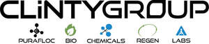

Trade Mark Journal No.2025/051 19 December 2025
UK00004303506 1 December 2025 (1,40,42)

- Class 1
- Chemicals used in industry, agriculture, horticulture and forestry; chemicals and chemical preparations for use in water and wastewater treatment; chemical absorbents; chemical sorbents; water treatment chemicals; chemicals and chemical preparations for use in water purification; waste treatment chemicals; chemicals and chemical preparations for use in the treatment of waste; chemical preparations for use in the treatment of animal waste; chemical preparations for use in the treatment of agricultural waste and sewage; chemical agents for purifying, clarifying, and conditioning water, wastewater, animal waste, agricultural waste and sewage; coagulants, flocculants, and biocides for the treatment of water, wastewater, animal waste, agricultural waste and sewage; biological preparations and additives for use in the treatment of water, wastewater, animal waste, agricultural waste and sewage; microbial and enzyme-based preparations for the breakdown of organic matter in water, wastewater, animal waste, agricultural waste and sewage; biological cultures for wastewater and effluent treatment; bacterial and enzymatic formulations for reducing biological oxygen demand (BOD) and chemical oxygen demand (COD) in water, wastewater, animal waste, agricultural waste and sewage; biological agents for the control of odours in water, wastewater, animal waste, agricultural waste and sewage; non-pathogenic microorganisms for use in improving water quality; biological additives for sewage treatment, industrial effluent treatment, greywater recycling, and aquaculture water management; enzyme-based preparations for enhancing biodegradation processes in water, wastewater, animal waste, agricultural waste and sewage, treatment systems; biological preparations for use in maintaining and restoring ecological balance in water bodies; microbial consortia for sludge reduction and nutrient removal in the treatment of water, wastewater, animal waste, agricultural waste and sewage; biological agents for the degradation of fats, oils, and greases in water systems.
- Class 40
- Water treatment services; wastewater treatment services; sewage treatment services; animal waste treatment services; agricultural waste treatment services; purification of industrial and domestic water; treatment and reclamation of greywater; recycling and regeneration of water; filtration, aeration and biological treatment of water; operation of water treatment plants and facilities; treatment of water using biological, chemical, and physical processes; decontamination of water; treatment of sludge and industrial effluent; odour control treatment in wastewater systems; information, advice and consultancy services relating to all of the aforementioned services; consultancy and advisory services relating to water purification, wastewater treatment, and effluent management; chemical treatment of metals; etching of metal surfaces; chemical milling services; energy production; clean energy production; production of renewable green energy; production of electrical energy from renewable resources; production of energy from waste materials; production of renewable energy from the anaerobic digestion of organic matter such as animal manure, agricultural waste and sewage; waste treatment; waste processing; animal waste treatment; treatment of agricultural waste and sewage; treatment [transformation] of waste; waste treatment using anaerobic digestion.
- Class 42
- Scientific and technological services and research and design relating thereto in the fields of water treatment, wastewater treatment, water purification, waste treatment, animal waste treatment, agricultural waste and sewage treatment, treatment of materials, chemical milling services, energy production, clean energy production, renewable green energy production, production of electrical energy from renewable resources, production of energy from waste materials, waste processing, animal waste treatment, waste treatment using anaerobic digestion; industrial analysis and research services in the fields of water treatment, wastewater treatment, water purification, waste treatment, animal waste treatment, agricultural waste and sewage treatment, treatment of materials, chemical milling services, energy production, clean energy production, renewable green energy production, production of electrical energy from renewable resources, production of energy from waste materials, waste processing, animal waste treatment and waste treatment using anaerobic digestion; technical consultancy and advisory services in the fields of water treatment, wastewater treatment, water purification, waste treatment, animal waste treatment, agricultural waste and sewage treatment, treatment of materials, chemical milling services, energy production, clean energy production, renewable green energy production, production of electrical energy from renewable resources, production of energy from waste materials, waste processing, animal waste treatment, waste treatment using anaerobic digestion; provision of scientific information, advice and consultancy relating to water treatment, wastewater treatment, water purification, waste treatment, animal waste treatment, agricultural waste and sewage treatment, treatment of materials, chemical milling services, energy production, clean energy production, renewable green energy production, production of electrical energy from renewable resources, production of energy from waste materials, waste processing, animal waste treatment, waste treatment using anaerobic digestion.
Clinty Chemicals Limited
Representative: FRKelly